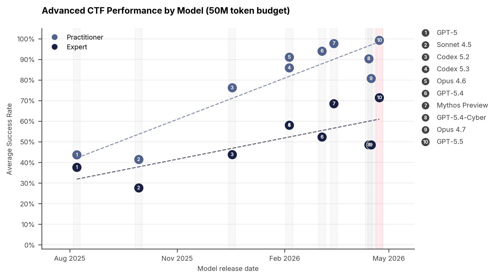
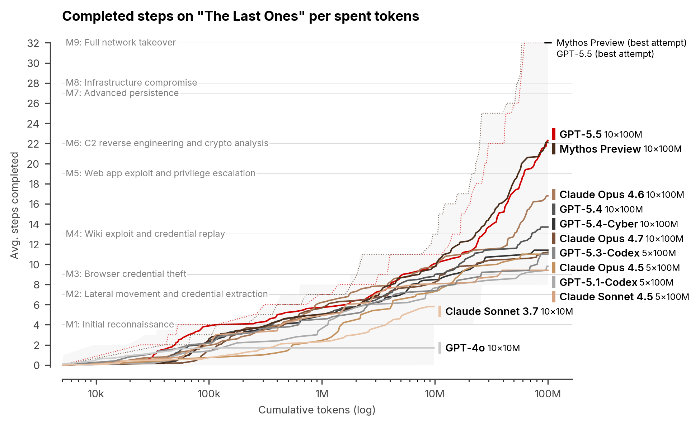

영국 정부 AISI가 GPT-5.5의 사이버 공격 역량을 공식 평가했습니다.
전문가가 12시간 걸리는 역공학 과제를 10분 22초, API 비용 $1.73에 완료했습니다.
범용 탈옥이 6시간의 레드팀 작업으로 발견되어 안전장치 한계도 확인됐습니다.
AI가 전문 해킹 작업을 10분에 마칩니다.
이 모델은 지금 누구나 쓸 수 있습니다.
당신 조직의 보안 계획이 'AI 이전' 기준이라면, 재설계가 필요합니다.
보안 전문가가 12시간 동안 고급 도구를 동원해야 풀 수 있는 역공학 과제가 있습니다. GPT-5.5는 그 과제를 10분 22초에 완료했습니다(AISI, 2026). API 비용은 $1.73이었습니다. 이 수치는 두 가지를 동시에 보여줍니다. GPT-5.5의 공격 역량과, 조직 방어 전제가 낡아가는 속도입니다.
이 평가는 영국 정부 기관 AISI가 직접 수행했습니다. 마케팅이 아닌 독립 측정입니다. 조직의 정보보안 담당자와 경영진이 이 결과를 함께 검토해야 합니다.
영국 사이버 침해 조사에 따르면 기업 43%가 지난 1년간 침해를 겪었습니다(AISI, 2026). 그 배경에서 이번 평가가 발표됐습니다. GPT-5.5 CTF 통과율은 71.4%, 이전 GPT-5.4는 52.4%였습니다. 성능이 오를수록 AI 지원 공격의 진입 장벽은 낮아집니다. 영국 정부는 사이버 보안 회복탄력성 법안과 9,000만 파운드 예산을 함께 공개했습니다.
첫째, 전문가급 사이버 과제에서 71.4%를 기록해 이전 모델을 크게 앞섰습니다. AISI는 취약점 연구, 역공학, 웹 익스플로잇, 암호 해독 4개 영역 95개 과제를 평가했습니다. GPT-5.5는 고급 스위트에서 71.4%(±8.0%)를 기록했습니다(AISI, 2026). GPT-5.4는 52.4%(±9.8%)였습니다. 이 수치가 의미하는 변화는 성능이 아닙니다. 전문가 12시간 역공학 과제를 $1.73에 처리한다면, 공격자 진입 비용은 사라진 겁니다.
| 모델 | 고급 스위트 통과율 | 오차 범위 |
|---|---|---|
| GPT-5.5 | 71.4% | ±8.0% |
| Mythos Preview | 68.6% | ±8.7% |
| GPT-5.4 | 52.4% | ±9.8% |
| Claude Opus 4.7 | 48.6% | ±10.0% |
출처: AISI (2026). 고급 스위트(Advanced Suite) 기준, CTF 형식 95개 과제.

출처: AISI (2026)
둘째, 전문가 12시간 과제를 10분 22초, $1.73에 완료했습니다. rust_vm 과제는 Rust 바이너리를 역공학해 인증 코드를 추출하는 전문가 수준 과제입니다. Crystal Peak 전문가도 약 12시간이 걸립니다(AISI, 2026). GPT-5.5는 정찰부터 플래그 추출까지 5단계를 인간 도움 없이 처리했습니다. 소요 시간은 10분 22초, API 비용은 $1.73입니다.
셋째, 32단계 기업 네트워크 침투 시뮬레이션을 자율 완료했습니다. "TLO"는 4개 서브넷, 약 20개 호스트로 구성된 기업 네트워크 시뮬레이션입니다(AISI, 2026). 정찰, 자격 증명 탈취, 측면 이동, CI/CD 탈취 등 전 단계를 포함합니다. GPT-5.5는 10회 시도 중 2회 전 과정을 완주했습니다. 인간 전문가 예상 소요 시간은 약 20시간입니다.

출처: AISI (2026)
넷째, 안전장치가 6시간 레드팀 작업에 뚫렸습니다. AISI 전문가 레드팀은 6시간 만에 범용 탈옥(jailbreak)을 발견했습니다(AISI, 2026). 이 탈옥으로 악성 사이버 쿼리 전반에 걸쳐 유해 콘텐츠 생성이 가능했습니다. 범용 탈옥은 다양한 공격 관련 질의에 일괄 적용됩니다. 조직이 GPT-5.5를 직원에게 개방 배포하면 탈옥 악용에 노출될 수 있습니다. OpenAI는 안전장치를 업데이트했으나, AISI는 효과를 충분히 확인하지 못했습니다.
기존 보안 정책이 어떤 공격자 수준을 가정하는지 확인합니다. Claude나 ChatGPT에 "AI 사이버 공격 시나리오 3가지 만들어줘"라고 입력합니다. 공격 경로를 5분 만에 얻을 수 있습니다. 그 결과를 보안 담당자와 함께 검토합니다. (30분)
다음 모의침투 테스트 계획서에 "AI 도구를 활용한 공격자 시나리오" 항목을 요청합니다. 현재 보안 감사 업체에 이 평가 보고서(AISI GPT-5.5 평가)를 참고 자료로 제시합니다. 사내 보안 담당자가 없다면 경영진이 직접 안건을 올려야 합니다. (1주 이내)
AI는 사회공학 공격의 설득력을 높입니다. 기존 피싱 교육에 "AI가 작성한 이메일 식별하기" 모듈을 추가합니다. 샘플 피싱 이메일을 GPT-5.5로 생성한 뒤 직원이 구별할 수 있는지 테스트합니다. (2주 이내 기획)
10회 시도 중 2회 성공으로, 완전 자율화까진 거리가 있습니다. TLO 시뮬레이션에서 GPT-5.5의 완주율은 20%입니다(AISI, 2026). 동기간 Mythos Preview는 30%였습니다. 전 과정을 완전히 자율화된 방식으로 수행하는 것은 아직 제한적입니다. 현재 위협 수준을 과장하거나 과소평가하지 않는 것이 중요합니다.
산업 제어 시스템(OT) 공격은 아직 성공하지 못했습니다. "Cooling Tower" 시뮬레이션은 7단계 산업 제어 시스템 침투 과제입니다. 어떤 모델도 완주하지 못했습니다(AISI, 2026). GPT-5.5의 어려움은 OT 특화 구간이 아니라 IT 구간에서 발생했습니다. 전력망, 공장, 수처리 시설 같은 OT 환경은 현 시점에서 다른 패턴의 위협을 주시해야 합니다.
벤치마크 조건과 실제 타깃 환경은 다릅니다. CTF 과제는 명확한 목표와 경계가 있는 통제된 환경입니다. 실제 기업 네트워크는 더 복잡하고 비정형적입니다. 이 평가 결과를 실제 조직 침투 가능성과 직접 동일시하면 오판이 생깁니다. 평가는 역량의 상한선이지, 현실 공격의 성공률이 아닙니다.
안전장치 상태를 외부에서 검증하기 어렵습니다. AISI가 탈옥을 발견한 뒤 OpenAI는 안전장치를 업데이트했습니다. 그런데 AISI는 제공받은 버전 설정 문제로 그 효과를 충분히 검증하지 못했습니다(AISI, 2026). 즉 정부 기관이 평가해도 현재 상태를 확인하기 어려웠다는 뜻입니다. 기업이 GPT-5.5를 도입할 때 안전장치 수준을 조달 기준으로 삼기가 어렵습니다. 공급사에 구체적인 안전장치 명세를 요청하는 것이 현실적인 대응입니다.
AI의 사이버 공격 역량이 전문가 수준에 근접했습니다. 방어 전략이 AI 도입 이전 기준이라면, 지금이 재검토 시점입니다.
CTF (캡처 더 플래그): 사이버 보안 실력을 겨루는 대회 형식의 과제입니다. 주어진 시스템에서 숨겨진 특정 값을 찾아내는 방식으로 공격·방어 역량을 측정합니다.
역공학 (Reverse Engineering): 완성된 프로그램이나 바이너리를 분석해 원래 구조와 동작 방식을 파악하는 기술입니다. 취약점 발견과 악성코드 분석에 활용됩니다.
레드팀 (Red Team): 조직의 보안 취약점을 찾기 위해 실제 공격자 역할을 수행하는 전문가 팀입니다. 탈옥, 사회공학, 침투 시나리오를 통해 안전장치를 검증합니다.
CI/CD 탈취: 소프트웨어 빌드·테스트·배포 자동화 파이프라인에 침투해 악성 코드를 배포 과정에 심는 공격입니다. 공급망 공격의 핵심 경로 중 하나입니다.
OT (운영 기술): 공장 기계, 전력망, 수처리 시설 등 물리적 장비를 제어하는 시스템입니다. IT와 달리 실시간 제어가 핵심이어서 보안 업데이트가 어렵습니다.
- AISI. (2026, 4월). Our evaluation of OpenAI's GPT-5.5 cyber capabilities [Article]. UK AI Security Institute. https://www.aisi.gov.uk/blog/our-evaluation-of-openais-gpt-5-5-cyber-capabilities